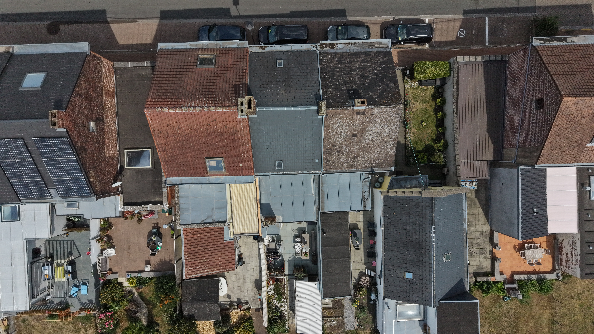
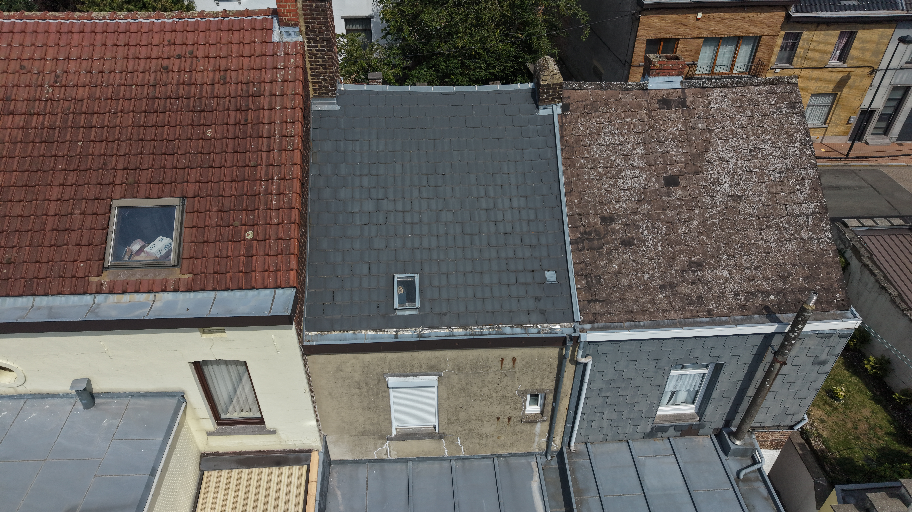
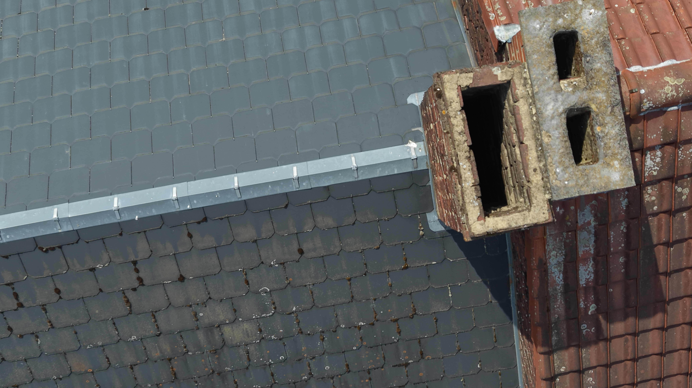
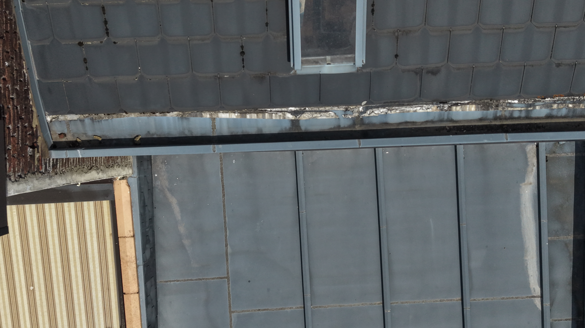
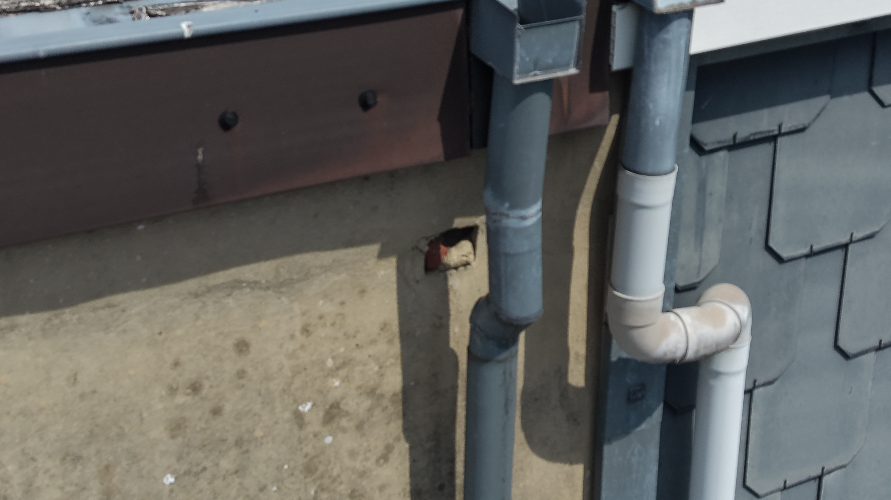

Toitures & Couvertures
Inspection visuelle des toitures inclinées, toitures plates, tuiles, couvertures et éléments structurels visibles.
Inspection de Toitures & Bâtiments par Drone
Inspection aérienne professionnelle de toitures, façades, gouttières, cheminées, panneaux solaires et zones difficiles d'accès. Recevez des images HD claires et, si nécessaire, un rapport d'inspection structuré.
UNE SOLUTION D'INSPECTION PRATIQUE
L'inspection par drone permet d'accéder visuellement et rapidement aux zones en hauteur ou difficiles d'accès, sans nécessiter d'échafaudage, d'échelle ou d'accès direct pour une première évaluation.
L'objectif est simple : fournir des preuves photographiques claires permettant d'identifier des défauts visibles, de documenter l'état d'une structure et de faciliter les décisions concernant l'entretien ou les réparations.

Nos Inspections
Chaque inspection est adaptée au bâtiment et aux zones qui doivent être documentées.
Inspection visuelle des toitures inclinées, toitures plates, tuiles, couvertures et éléments structurels visibles.
Images détaillées des murs extérieurs, façades en hauteur, joints, fissures visibles et éléments difficiles d'accès.
Contrôle visuel des gouttières, descentes d'eau, zones d'évacuation ainsi que des obstructions ou dommages visibles.
Documentation visuelle rapprochée des cheminées, raccords, joints et zones de toiture environnantes.
Inspection visuelle et documentation des installations photovoltaïques en toiture et de leurs zones environnantes.
Inspection de zones élevées ou difficiles dont l'accès visuel conventionnel serait complexe ou dangereux.
Pourquoi l'Inspection par Drone
Une première inspection sans accès inutile aux zones en hauteur.
Documentez rapidement les zones qui nécessiteraient autrement des moyens d'accès supplémentaires.
Les images haute résolution permettent d'examiner les problèmes visibles après l'inspection.
Les images et rapports peuvent faciliter les échanges concernant l'entretien, les réparations ou les assurances.
Comment ça Fonctionne
Communiquez l'adresse et expliquez ce que vous souhaitez faire inspecter.
L'espace aérien, le lieu, les accès et les contraintes opérationnelles sont vérifiés.
Le vol est réalisé en fonction des conditions météorologiques et de la réglementation applicable.
Vous recevez les photographies sélectionnées, les vidéos et/ou le rapport d'inspection.
Exemple Réel d'Inspection
Cet exemple montre comment une inspection de toiture peut être documentée, depuis les vues aériennes générales jusqu'aux observations détaillées et au rapport d'inspection structuré.

Exemple de Mission
Une inspection visuelle complète a été réalisée afin de documenter la couverture, les bords de toiture, les éléments d'évacuation des eaux, la fenêtre de toit et les détails extérieurs visibles.

État général de la toiture

Cheminée & raccords

Bord de toiture & raccords

Évacuation des eaux pluviales
Cette inspection réelle est présentée comme exemple de la documentation pouvant être fournie à la suite d'une inspection par drone. Les informations sensibles et les éléments permettant d'identifier le bien ont été supprimés ou anonymisés pour cette présentation.
Rapport d'Inspection
Lorsqu'un rapport est sélectionné, l'inspection est livrée sous la forme d'un PDF structuré, conçu pour faciliter la consultation des observations photographiques.
Localisation, date et informations relatives à la mission.
Photographies sélectionnées et organisées par zone inspectée.
Remarques claires associées aux images correspondantes.
Rapport numérique structuré, prêt à être archivé ou partagé.
Important
L'inspection par drone fournit des informations photographiques et visuelles sur les surfaces extérieures accessibles. Elle ne remplace pas un diagnostic structurel, une expertise d'ingénieur ou l'intervention d'un spécialiste lorsque celle-ci est nécessaire.
Formules d'Inspection
Chaque propriété est différente. Le prix dépend du lieu, de l'environnement de vol, des zones à inspecter et des contraintes opérationnelles. Le prix final est toujours confirmé avant l'inspection.
Inspection Visuelle
Inspection Documentée
Inspection Étendue
Les prix affichés incluent la TVA. Le prix final dépend du lieu,
de l'environnement de vol, des zones à inspecter et des contraintes opérationnelles.
Les déplacements, restrictions de l'espace aérien, autorisations supplémentaires
ou exigences spécifiques en matière de documentation
peuvent modifier le devis final.
Avant le Vol
Avant chaque mission, le lieu et l'environnement opérationnel sont analysés afin de confirmer que l'inspection peut être réalisée en toute sécurité et dans le respect de la réglementation.
Cela comprend notamment l'espace aérien, les conditions météorologiques, l'accès au site, les restrictions de vol applicables et les considérations relatives à la vie privée.
Si des autorisations spécifiques ou des dispositions supplémentaires sont nécessaires, elles sont identifiées avant l'inspection et discutées avec vous au préalable.
FAQ
Pas toujours. Cela dépend du bâtiment, des conditions d'accès et des zones à inspecter. Si l'accès peut être organisé à l'avance, l'inspection peut souvent être réalisée sans votre présence.
Si le vent, la pluie ou les conditions de visibilité ne permettent pas d'effectuer le vol en toute sécurité, l'inspection sera reportée ou reprogrammée.
La plupart des sites peuvent être évalués, mais les restrictions de l'espace aérien, les conditions du site, les considérations liées à la vie privée ou d'autres contraintes opérationnelles peuvent nécessiter une préparation supplémentaire ou limiter l'inspection.
Dans de nombreux cas, oui. Le drone permet d'obtenir des images détaillées des toitures et des zones difficiles d'accès sans nécessiter un accès direct à la toiture pour la première inspection visuelle.
Cela dépend de la formule sélectionnée. Les livrables peuvent comprendre des photographies haute résolution, une documentation photographique organisée et, lorsque cette option est sélectionnée, un rapport d'inspection PDF structuré.
Le délai de livraison dépend de la formule choisie et de l'étendue de l'inspection. Le délai prévu est confirmé avant la mission.
Oui. La documentation numérique peut être partagée avec des couvreurs, entrepreneurs, gestionnaires immobiliers, assureurs ou autres professionnels. Le rapport fournit une documentation visuelle et ne remplace pas un diagnostic structurel ou l'expertise d'un spécialiste.
Demander une Inspection
Indiquez l'adresse du bien, les zones que vous souhaitez faire inspecter, la formule souhaitée si vous la connaissez, ainsi que toute information utile concernant le problème. Vous ne savez pas quelle formule choisir ? Nous pouvons vous aider.
Sans engagement — nous vérifions le lieu avant de confirmer l'inspection.